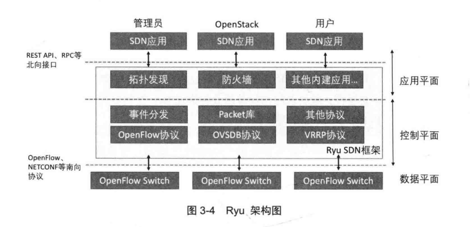

SDN技术将交换设备的控制平面迁移到集中化的控制器中，利用标准化的南向接口替换了交换设备中的控制平面，并在控制器中增加了可编程的北向接口供上层调用。
南向网络控制技术
控制器的网络控制技术主要包括通过南向接口协议进行链路发现、拓扑管理、策略制定、表项下发等。其中链路发现和拓扑管理主要是控制器利用南向接口的上行通道对底层交换设备上报信息进行统一监控而统计的技术，而策略制定和表项下发则是控制器利用南向接口的下行通道对网络设备实施统一控制的技术。
- 链路发现：链路发现是获得SDN全网信息的关键，由控制器统一完成。SDN控制器主要是使用了LLDP链路层发现协议来进行，通过每个交换机传来的信息，创建出完备的网络拓扑图。
- 拓扑管理：最主要的就是随时监控和采集网络中SDN交换机的信息，及时反馈网络中的设备工作状态和链路连接状态。为了实现这一目标，控制器需要定时发送LLDP的数据包获知交换机信息。另一个工作是对逻辑组网进行记录，最典型的应用场景是云计算环境下多租户共享网络资源。这些租户网络相关的信息都要在拓扑管理中保存和展现，以反映真实的网络利用状况。
- 策略制定：流表是SDN交换机进行数据处理的最基本依据，直接影响了数据转发效率和网络的性能。控制器流表的生成算法成了影响控制器智能化水平的关键因素。SDN交换机中的流表机制打破了传统网络中的层次化概念，无论是源MAC等二层信息，还是目的IP等三层信息，都统一封装在一个流表项中。因此，控制器就需要针对不同层次上的网络需求，制定相应的网络转发策略：
- 对于二层网络数据的转发，传统设备的主要工作是学习MAC地址和基于MAC的转发。而SDN中，MAC学习已经在链路控制中实现，所以只需要以目的MAC为依据，将对应的交换机转发端口号写入相应交换机的流表项即可。
- 对于三层网络数据的转发，传统设备通常采用“一次路由多次转发”的机制，即交换设备在接受来自源IP的数据包后，查询路由表确定到达目的IP的路由，并通过一定的机制确立源MAC与目的MAC以及转发端口的对应关系，后续在源和目的之间产生的通信由二层模块直接处理。在SDN中，核心是控制器利用相关的路由算法计算出源和目的之间的路由信息，并以IP地址、MAC地址为依据将对应的交换机转发端口写入相应的流表中。
- 对于四层网络数据的转发，最主要的是额外考虑每个数据包中包含哪个应用协议的TCP/UDP端口信息。以TCP/UDP端口、IP地址、MAC地址为依据，写入对应交换机流表中。
- 表项下发：SDN流表下发有主动和被动两种模式
- 主动：在数据包到达交换机之前就进行流表设置，数据包到达的时候交换机已经知道如何处理，消除了数据传输中流表项设置的延迟。
- 被动：交换机收到一个数据包且没有与之匹配的流表项时，只能将其送给控制器处理。一旦控制器确定后，相关的信息就返回并缓存在交换机上。
北向业务支撑技术
通过北向接口，网络业务的开发者能够以软件编程的方式调用局域网、广域网等各种各样的网络资源能力。同时网络资源管理系统可以通过控制器提供的北向接口获知网络资源的工作状态并对网络资源进行调度，实现资源的统一交付，更好地支持云计算等新业务对网络资源的需求。
东西向控制器扩展技术
控制器复制对整个SDN的集中化控制，对于把握全局资源视图、改善网络资源交付质量具有非常重要的作用。但控制能力集中化，也使控制器具有了更大的责任，一旦控制器在性能上或安全上得不到保障，随之而来的就是整个SDN的服务能力降级甚至全网瘫痪。另外，从组网架构上来看，单一的控制器也无法应对跨越多个地域的SDN问题。所以需要多台控制器形成的分布式集群，避免单一控制节点造成的可靠性、可扩展性、性能方面的问题。目前用于多个控制器之间的沟通和联系的东西向接口还没有被定义为标准，但是之前的一些集群技术已经可以被用于解决上述的问题。
开源控制器
主要的一些开源控制器：
| 名称 | 编程语言 | 简介 |
|---|---|---|
| Beacon | java | Stanford大学开发，采用模块化设计 |
| Floodlight | java | 基于Beacon开发，一个企业级的经典SDN控制器 |
| NodeFlow | javascript | 基于Nodejs的控制器 |
| NOX | C++ | 业界第一个SDN控制器 |
| POX | python | NOX的兄弟版本 |
| Ryu | python | NTT公司开发，具有丰富的控制器API |
| OpenDaylight | java | 支持多种南向协议的广义SDN控制平台 |
Ryu
Ryu是由日本的NTT公司开发的python的开源SDN控制器，代码的模块清晰，可拓展性强。
架构与其他的SDN控制器相似，大致分为控制层和应用层。
控制层主要包括协议解析、事件系统、基本网络报文库类等。应用层是基于控制层提供的API编写的网络应用，以及支持Ryu和其他系统协同工作的模块。而且提供了REST API和RPC接口，允许外界进程与Ryu进行通信。可以作为OpenStack的插件，也支持和Snort协同合作。

Ryu主要组件：
- 基本组件
| 组件名 | 功能 |
|---|---|
| base.app_manager | 对其他组件的管理，由ryu-manager自动调用 |
| controller.dpset | 管理of交换机的组件 |
| controller.ofp_handler | 对控制器、交换机之间握手、协商过程的处理 |
| controller.ofp_event | 完成OF消息-事件的转换，提供北向接口 api |
| controller.controller | 控制器组件，管理与of交换机连接的安全通道，接受of消息，调用ofp_event并发布相应的事件 |
- 与of协议相关的组件
| 组件名 | 功能 |
|---|---|
| ofproto.v_1_X | 相应协议版本的参数 |
| ofproto.v_1_X_parser | 定义了相应协议版本消息的封装格式 |
- 内建应用
| 组件名 | 功能 |
|---|---|
| app.gui_topology.gui_topology | 拓扑发现的GUI模块 |
| app.simple_vlan | 基本的vlan |
| app.tunnel | 多种隧道策略 |
| app.simple_switch | 简单2层交换机交换策略 |
- 其他
| 组件名 | 功能 |
|---|---|
| cmd.* | 命令行相关功能 |
| lib.* | 报文相关的定义，比如IP，TCP等 |
| topology.* | 拓扑相关的事件和数据结构，提供对应的API |
| app.rest* | 基础的REST API 接口 |
| app.ofp_rest | of相关的REST API |
至此，基本理论就大体学完了，下面就开始进行实践了！